Culinarium · Startseite · Abschnitt unter dem Auftakt
Jede Fassung erklärt dasselbe: Culinarium ist der Abend, das Walk on the Wild Side ist das Haus, in dem er stattfindet. Unterschiedlich ist, wie die beiden zueinander stehen: nebeneinander, ineinander, nacheinander oder umschaltbar. Texte und Fotos sind die echten. Unten in der Leiste blätterst du von Fassung zu Fassung.
Die Bar füllt den ganzen Rahmen, der Abend sitzt als helles Bild darin. Man sieht sofort: Culinarium findet in diesem Haus statt.
Bewegung: das innere Bild zieht beim Hereinscrollen von 114 auf 100 Prozent · Handy: Bar oben, Abend-Karte schiebt sich darüber
Culinarium ist ein Abend, der an einzelnen Wochenenden in einer Bar in Linden stattfindet. Das hier ist seine Seite.
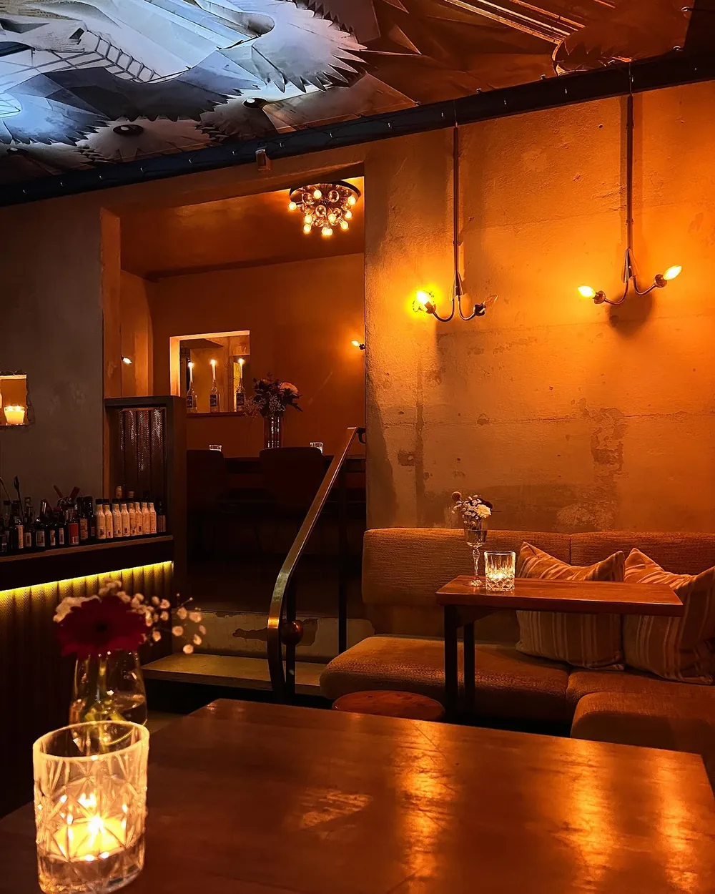
Das Haus
Eine Mixology-Bar ohne Karte, Haasemannstraße 13. Donnerstag bis Samstag ab 19 Uhr.
Das Haus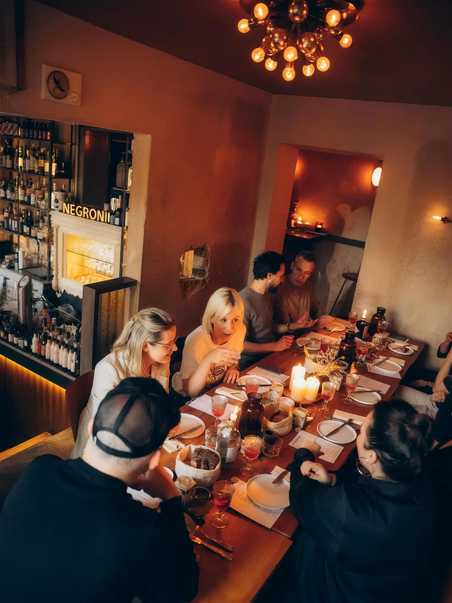
Ein Menü mit fünf passenden Drinks an einer langen Tafel für vierzehn Gäste, an einzelnen Wochenenden.
Freitag ab 19:00 · Samstag ab 17:00 · zuletzt 89,00 EUR
Der AbendEin grosses Bild, zwei Wörter darüber zum Antippen: Culinarium-Abend oder Barabend. Bild und Text tauschen an derselben Stelle, nichts springt. Erklärt ohne Worte, dass beides derselbe Ort ist.
Bewegung: Überblenden mit leichtem Zoom beim Tippen · Handy: Bild oben, Schalter und Text darunter
Culinarium ist ein Abend, der an einzelnen Wochenenden in einer Bar in Linden stattfindet. Das hier ist seine Seite.
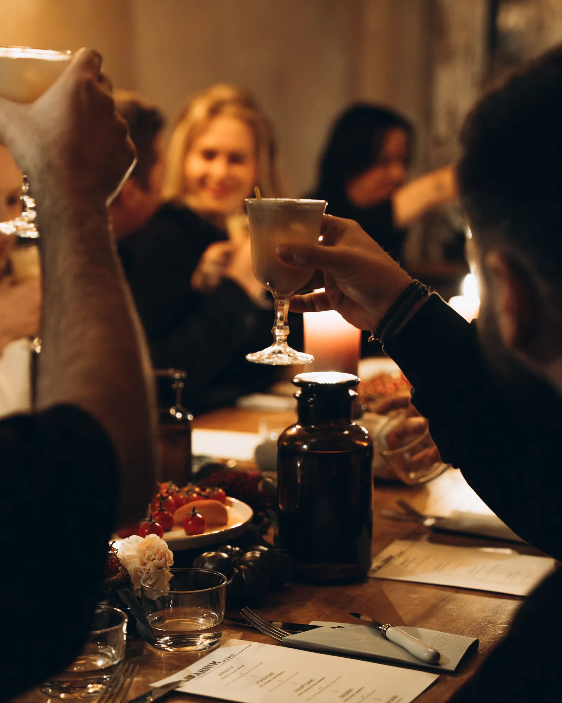
Ein Menü mit fünf passenden Drinks an einer langen Tafel für vierzehn Gäste, an einzelnen Wochenenden.
Freitag ab 19:00 · Samstag ab 17:00 · zuletzt 89,00 EUR
Der AbendDerselbe Raum, Haasemannstraße 13 in Linden.
Zuerst steht die Bar im ganzen Bild. Beim Scrollen teilt sie sich in der Mitte und gleitet zur Seite, dahinter liegt die gedeckte Tafel. Das Haus öffnet sich für den Abend.
Bewegung: zwei Bildhälften fahren auseinander (nur Weg), die Tafel zoomt von 110 auf 100 · Handy: gleich, Text kürzer
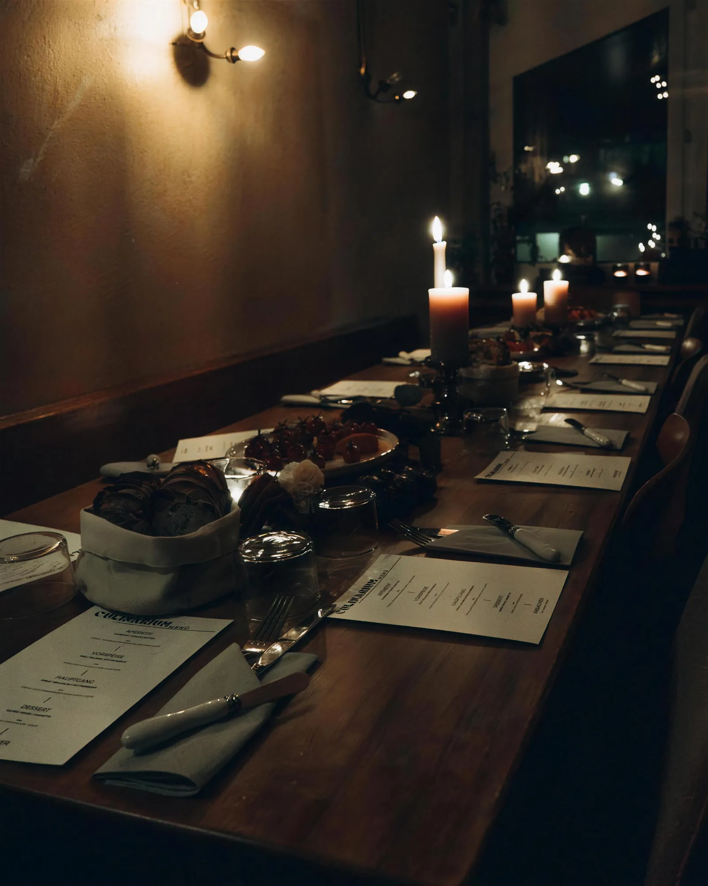
An einzelnen Wochenenden
Ein Menü mit fünf passenden Drinks an einer langen Tafel für vierzehn Gäste.
Freitag ab 19:00 · Samstag ab 17:00 · zuletzt 89,00 EUR
Der AbendDonnerstag bis Samstag ab 19 Uhr
Eine Mixology-Bar ohne Karte in Linden, Haasemannstraße 13. Hier findet Culinarium statt.
Das HausEin breites Bild, darunter die sieben Tage als grosse Schrift. Donnerstag bis Samstag leuchtet die Bar, Freitag und Samstag zusätzlich die Kerzenlinie für Culinarium. Wann was ist, versteht man auf einen Blick.
Bewegung: die Linien unter den Tagen ziehen sich beim Hereinscrollen auf · Handy: Tage ohne Zusatz, Legende darunter
Culinarium ist ein Abend, der an einzelnen Wochenenden in einer Bar in Linden stattfindet. Das hier ist seine Seite.
Auf jedem Culinarium-Plakat steht oben «Walk on the Wild Side» und unten «Culinarium». Ein echtes Plakat liegt klein und schräg auf dem grossen Barfoto und erklärt die Beziehung mit dem eigenen Material des Hauses.
Bewegung: das Plakat dreht sich beim Hereinscrollen von −9° auf −4°, als würde es abgelegt · Handy: Bild oben, Plakat an der unteren Ecke
Culinarium ist ein Abend, der an einzelnen Wochenenden in einer Bar in Linden stattfindet. Das hier ist seine Seite.
Ein Menü mit fünf passenden Drinks an einer langen Tafel für vierzehn Gäste.
Freitag ab 19:00 · Samstag ab 17:00 · zuletzt 89,00 EUR
Der AbendWalk on the Wild Side, eine Mixology-Bar ohne Karte, Haasemannstraße 13. Donnerstag bis Samstag ab 19 Uhr.
Das Haus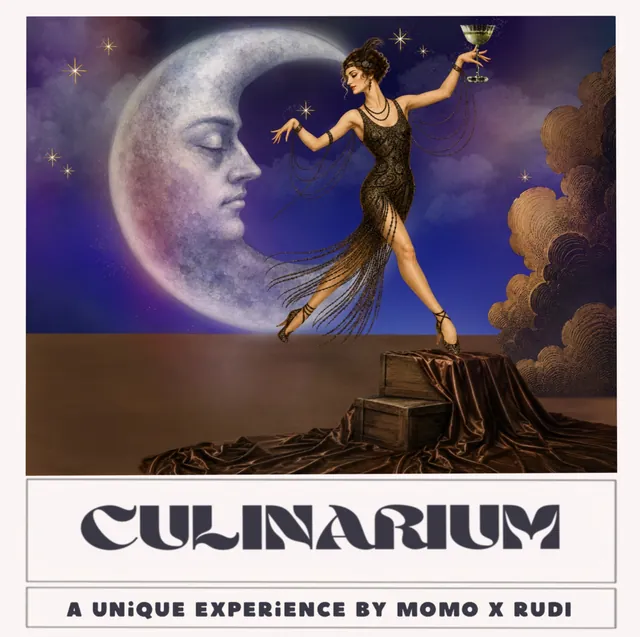
Der Text steht als geschlossener Block in der Mitte, links läuft die Tafel an den Rand, rechts die Theke. Ruhig, ausgewogen, die Erklärung im Zentrum.
Bewegung: die beiden Bilder wandern beim Scrollen leicht gegenläufig · Handy: Text oben, zwei Bilder nebeneinander
Ein Menü mit fünf passenden Drinks an einer langen Tafel für vierzehn Gäste, an einzelnen Wochenenden.
Freitag ab 19:00 · Samstag ab 17:00 · zuletzt 89,00 EUR
Der AbendEr findet im Walk on the Wild Side statt, einer Mixology-Bar ohne Karte in Linden, Haasemannstraße 13.
Bar: Donnerstag bis Samstag ab 19 Uhr
Das HausEine warmweisse Karte wie die, die an der Tafel liegt, auf einem dunklen Tischfoto. Oben der Abend in Versalien, unten am Falz das Haus: «Serviert im Walk on the Wild Side». Ein Gegenstand des Abends statt zweier Kacheln.
Bewegung: die Karte legt sich beim Hereinscrollen gerade (2,2° auf 0°) · Handy: Karte füllt die Breite
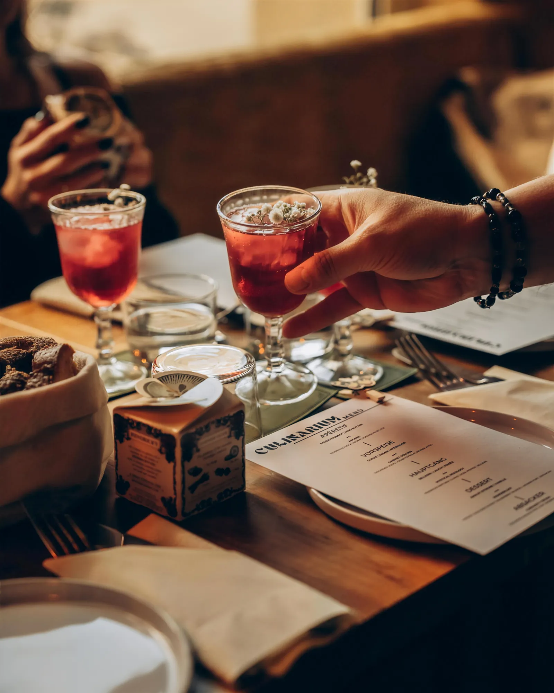
Culinarium nimmt zwei Drittel ein, das Haus steht kleiner daneben und greift über die Kante des grossen Bildes. Die Rangfolge ist sichtbar: Das ist die Seite des Abends, die Bar ist sein Ort.
Bewegung: das kleine Bild läuft beim Scrollen leicht gegen das grosse · Handy: grosses Bild, das kleine schiebt sich unten rechts darüber
Culinarium ist ein Abend, der an einzelnen Wochenenden in einer Bar in Linden stattfindet. Das hier ist seine Seite.
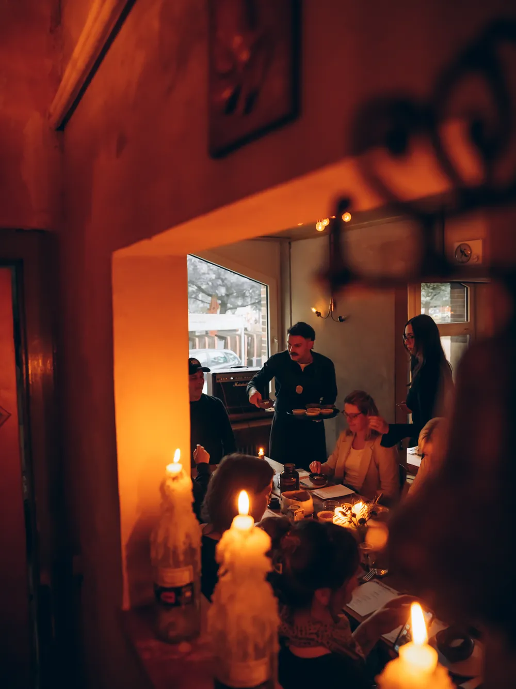
Ein Menü mit fünf passenden Drinks an einer langen Tafel für vierzehn Gäste, an einzelnen Wochenenden.
Freitag ab 19:00 · Samstag ab 17:00 · zuletzt 89,00 EUR
Der Abend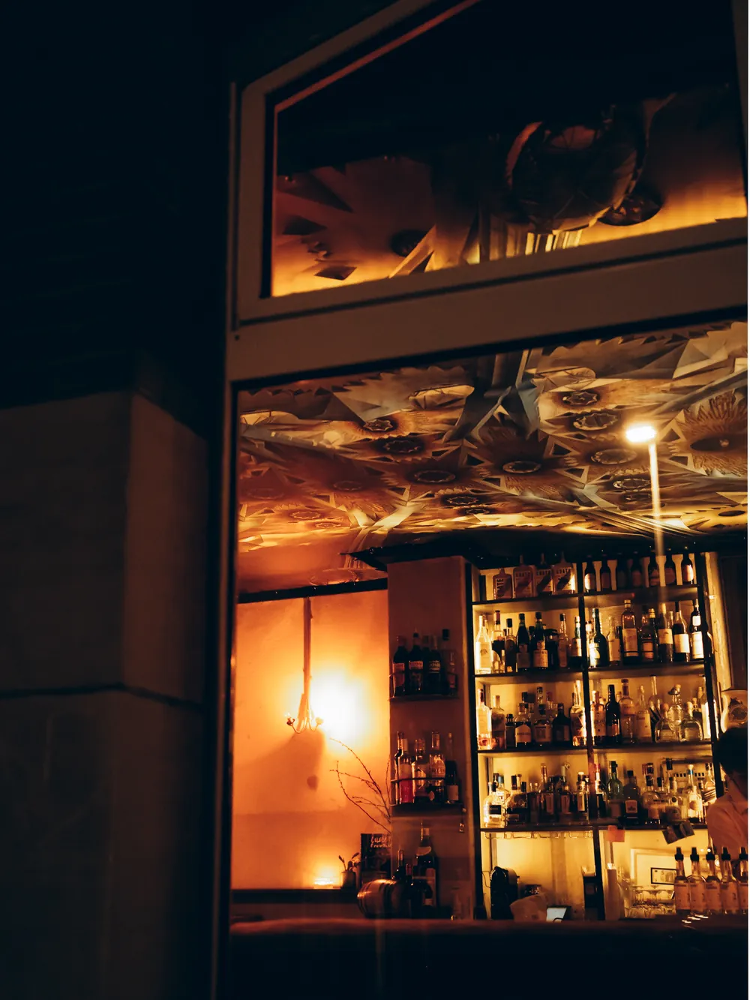
Das Haus
Mixology-Bar ohne Karte, Haasemannstraße 13. Donnerstag bis Samstag ab 19 Uhr.
Das HausErst das Schild der Bar über die ganze Breite und ein einziger Satz darauf. Danach Ruhe: der Abend erklärt, ein Bild der Tafel, das Haus als stille Spalte daneben.
Bewegung: das Schild zoomt beim Hereinscrollen langsam von 110 auf 100 · Handy: Schild, Satz, dann alles untereinander
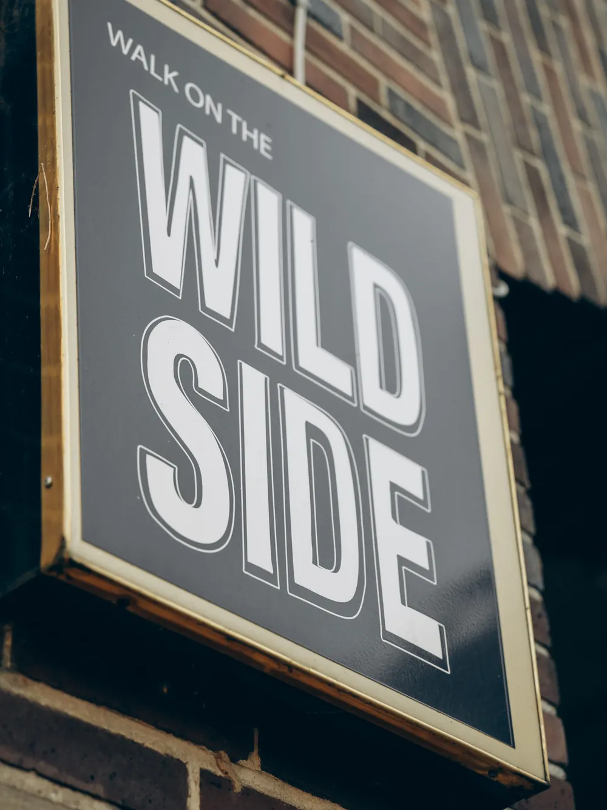
Zwei grosse Bilder als Spaltenköpfe, darunter Zeile für Zeile: Was, Wann, Wo. Die Werte stehen genau nebeneinander. Am sachlichsten, beantwortet die Frage «Was ist was?» am schnellsten.
Bewegung: nur das Hochschweben der Zeilen · Handy: zwei schmale Spalten, Zeilennamen fallen weg
Culinarium ist ein Abend, der an einzelnen Wochenenden in einer Bar in Linden stattfindet. Das hier ist seine Seite.
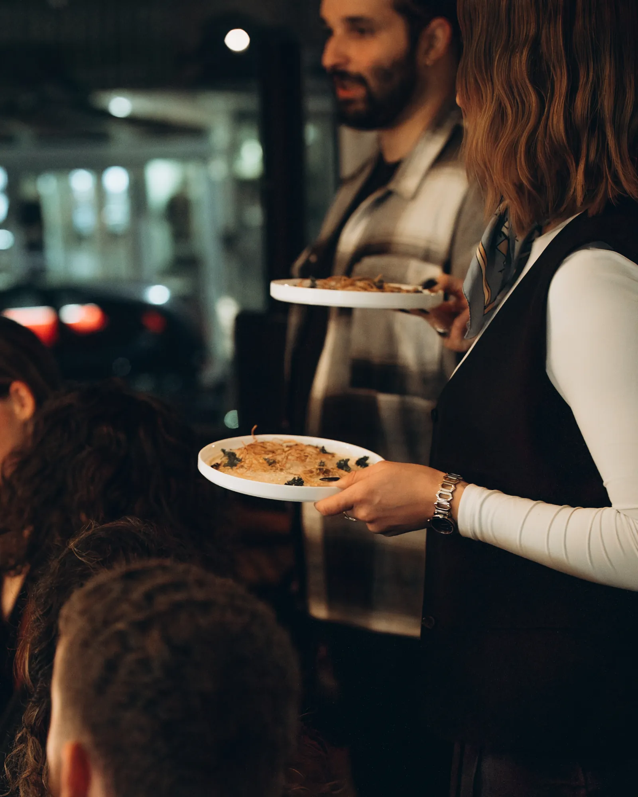
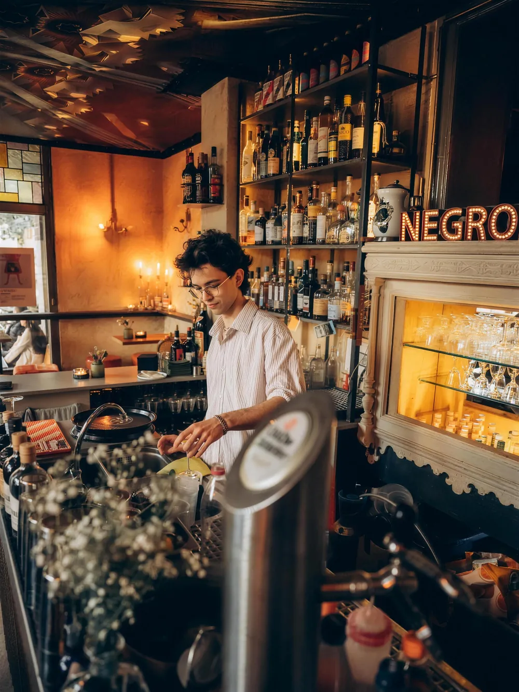
Ein Menü mit fünf passenden Drinks
Mixology-Bar ohne Karte
An einzelnen WochenendenFreitag ab 19:00, Samstag ab 17:00
Donnerstag bis Samstagab 19 Uhr
An der langen Tafelvierzehn Plätze, zuletzt 89,00 EUR
Haasemannstraße 13Linden
Zwei Zeilen in der Titelschrift laufen gegeneinander: oben die Wörter des Abends, unten, als Kerzen-Kontur, die Wörter der Bar. Dazwischen ein breites Bild und die beiden Erklärungen.
Bewegung: Laufband, nur transform · Handy: Zeilen kleiner, Bild und Texte untereinander
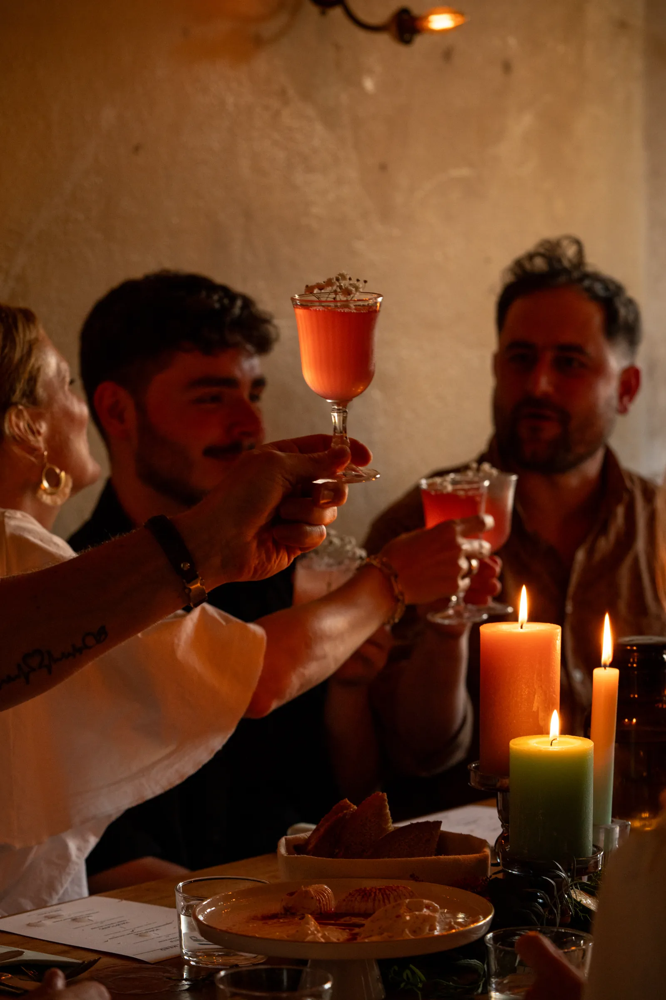
Ein Menü mit fünf passenden Drinks an einer langen Tafel für vierzehn Gäste, an einzelnen Wochenenden.
Fr ab 19:00 · Sa ab 17:00 · zuletzt 89,00 EUR
Der AbendCulinarium findet im Walk on the Wild Side statt, einer Mixology-Bar ohne Karte, Haasemannstraße 13.
Do bis Sa ab 19 Uhr
Das HausDie ganze Erklärung als ein grosser Satz in der Titelschrift, die Fotos stehen als kleine Bildfenster mitten in den Wörtern. Liest sich wie eine Einladung, nicht wie zwei Produkte.
Bewegung: die Bildfenster wachsen beim Hereinscrollen von 70 auf 100 Prozent · Handy: Satz bricht um, Bilder bleiben im Satz · Risiko: Fotos sind hier klein
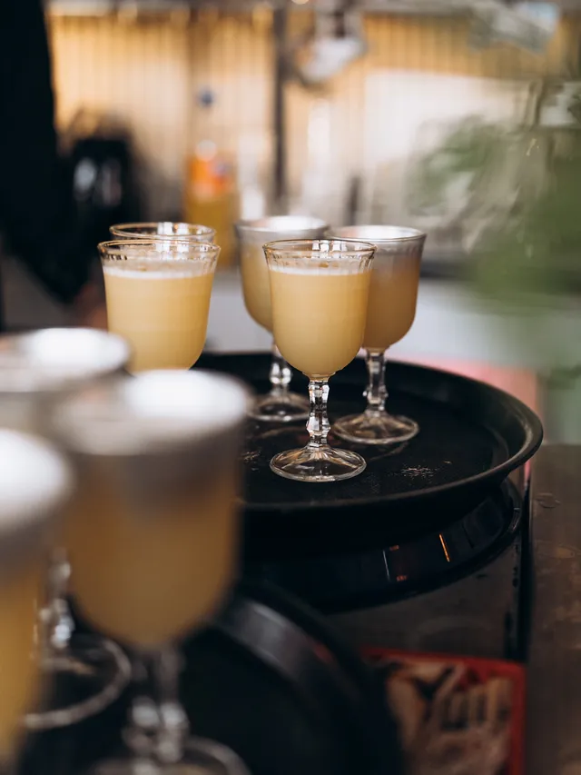
für vierzehn Gäste, im Walk on the Wild Side einer Bar in Linden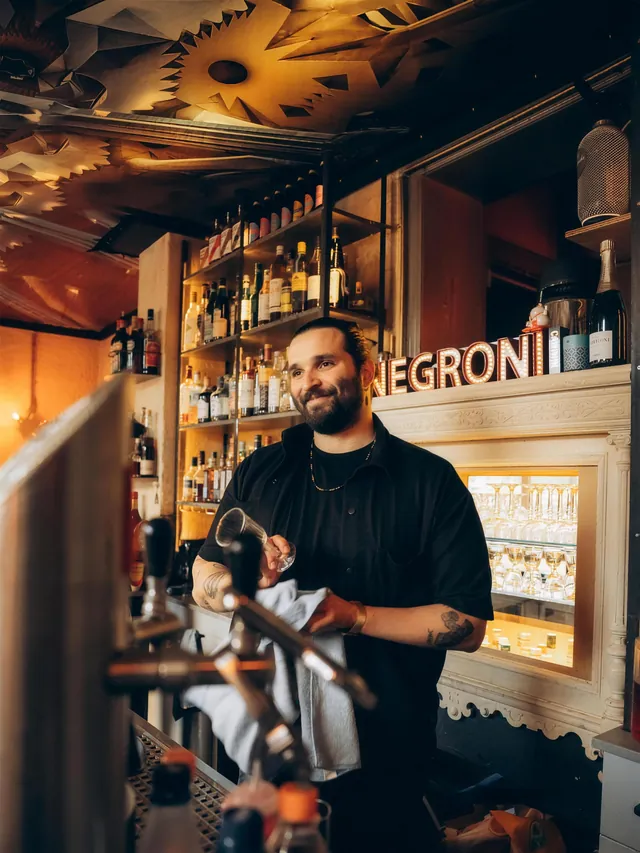
Die Bühne bleibt stehen. Zuerst das Fenster der Bar bei Nacht mit dem Haus-Text, beim Scrollen fährt die Kamera durch das Fenster hinein, und drinnen steht die Tafel mit dem Abend-Text. Ein Weg statt zweier Kacheln.
Bewegung: Zoom durch das Fenster, dann Tausch (Weg und Deckkraft) · Handy: gleich
Haasemannstraße 13, Linden
Eine Mixology-Bar ohne Karte, Donnerstag bis Samstag ab 19 Uhr. Hier drinnen findet Culinarium statt.
An einzelnen Wochenenden
Ein Menü mit fünf passenden Drinks an einer langen Tafel für vierzehn Gäste.
Freitag ab 19:00 · Samstag ab 17:00 · zuletzt 89,00 EUR
Der Abschnitt ist selbst das Haus: oben das Schild, darunter zwei Fenster. Im oberen die Tafel mit Culinarium, im unteren die Theke mit der Bar. Beides unter einem Dach, ohne Erklärung.
Bewegung: in den Fenstern geht das Licht an (Deckkraft von 50 auf 100) · Handy: Fenster und Text untereinander
An einzelnen Wochenenden
Ein Menü mit fünf passenden Drinks an einer langen Tafel für vierzehn Gäste.
Freitag ab 19:00 · Samstag ab 17:00 · zuletzt 89,00 EUR
Der AbendDonnerstag bis Samstag ab 19 Uhr
Mixology ohne Karte, Haasemannstraße 13 in Linden. Das Haus, in dem Culinarium stattfindet.
Das Haus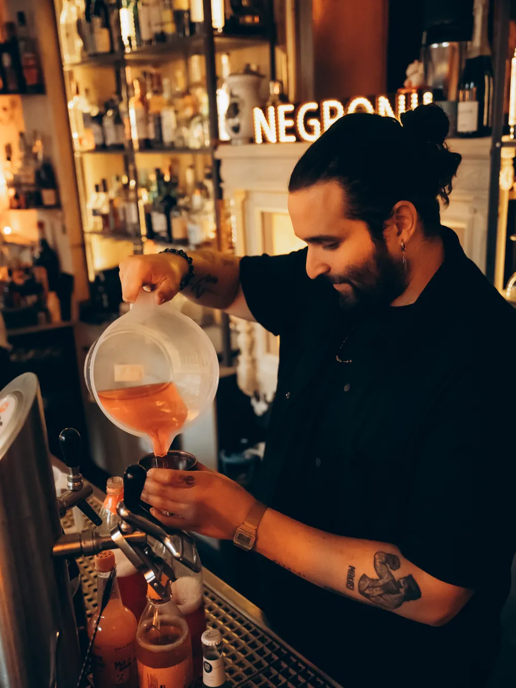
«Culinarium» über die ganze Breite, gefüllt mit dem Foto der gedeckten Tafel. Darunter klein: «im» und das Schild der Bar als runder Ausschnitt. Dann die beiden Erklärungen als ruhige Zeilen mit Bild.
Bewegung: keine eigene, nur das Hochschweben · Handy: Wort füllt die Breite, Zeilen untereinander
Ende der 15 Fassungen. Sag mir einfach die Nummer, die in die Startseite soll.